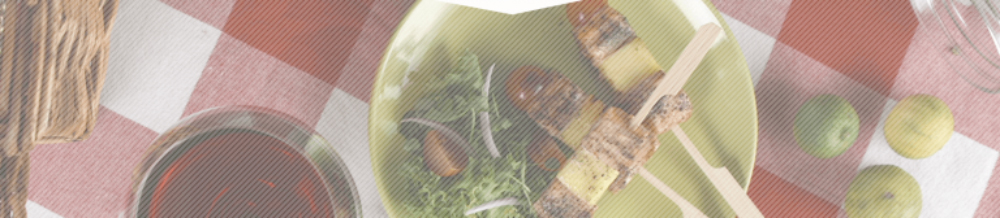
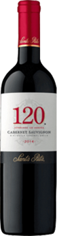

Salmon
and mango skewers
Sommelier's advice
Chardonnay or Carmènére
Ingredients
- Fresh salmon, 7 ounces
- One mango, cubed
- Salt
- Pepper
- 1 Tablespoon dry dill
- 1 Lemon
- 5 Skewers
Preparation
- Cut the salmon into cubes and season with salt, pepper, dill and a splash of lemon juice.
- Alternate the salmon and mango cubes on skewer sticks. To finish, cook them on the grill or put them into an oven preheated to 350ºF until they are golden brown.